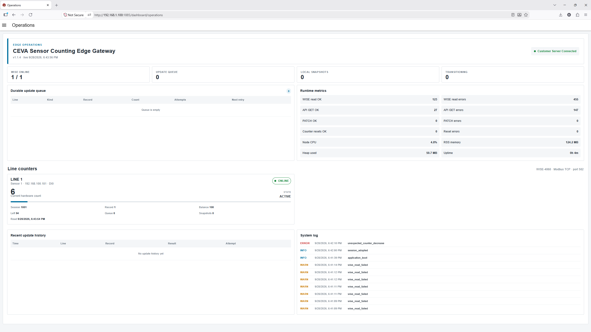
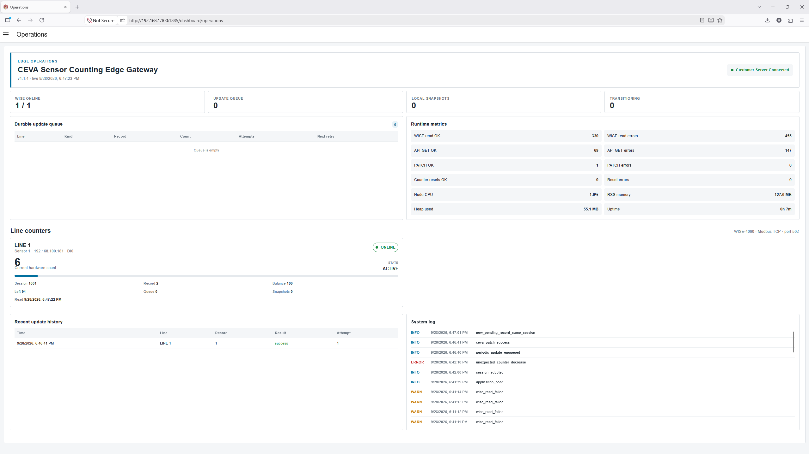

Using the Operations page
Learn how to read the main dashboard, understand the summary cards and interpret line information correctly.
The Operations page is the main dashboard for daily monitoring. It gives one-screen visibility of line status, queue health, current count and recent activity.


Main areas on the page
Header summary cards
- Customer/Server connected — overall server communication status.
- WISE online — number of connected line devices.
- Update queue — number of updates waiting for retry.
- Local snapshots — locally retained count snapshots.
- Transitioning — number of lines currently switching session or resetting.
Runtime metrics
This panel helps check overall health. It shows read counts, API counts, reset results and Node-RED resource usage such as CPU, memory and uptime.
Durable update queue
This table shows updates that still need retry. A normal healthy state is usually an empty queue or a queue that quickly returns to empty after a temporary communication issue.
Understanding each line card
- Line name — the production line identifier.
- [Sensor Name] / [IP Address] / [DI Channel] — installed field device details for reference.
- Current hardware count — latest count value read from the WISE counter.
- ONLINE / OFFLINE — communication status of the WISE device.
-
State — line runtime state, for example
IDLE,ACTIVEor a transition/reset state.
- Session — current session ID used for that line.
- Record — current server record ID used for updates.
- Left — remaining quantity still to be produced/processed.
- Balance — target quantity for the active record.
- Queue and Snapshots — local backlog indicators for that line.
- Read time — latest counter read timestamp.
Expected page behavior
- The page refreshes automatically.
- Counts should increase when material passes the sensor.
- The queue may temporarily increase during a communication problem, then reduce again automatically.
- Recent update history and system log widgets at the bottom provide a quick local summary without leaving the Operations page.